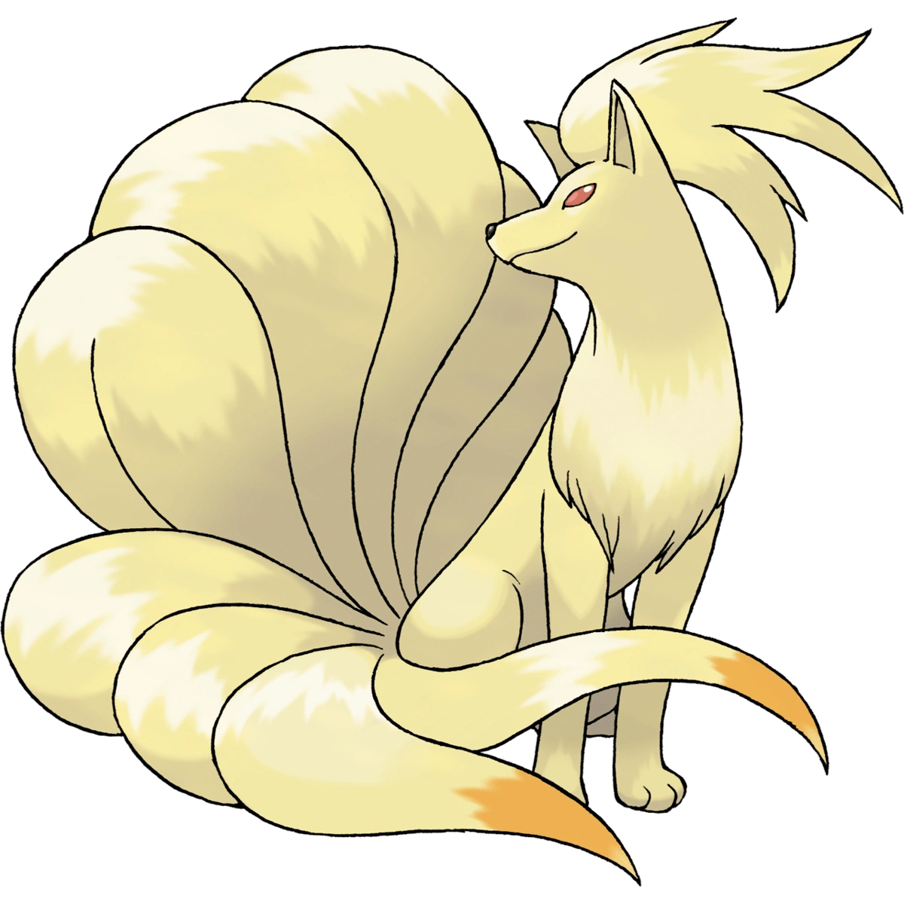
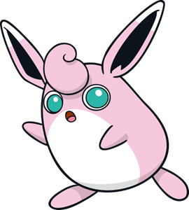
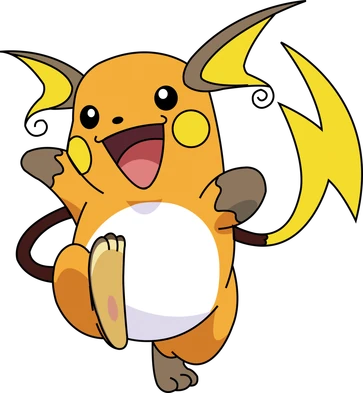
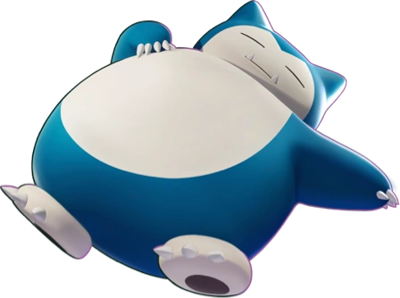
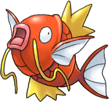

Eevee
Normal
Eevee is a small, mammalian, quadrupedal Pokémon with primarily brown fur. The tip of its bushy tail and its large furry collar are cream-colored. It has short, slender legs with three small toes and a pink paw pad on each foot. Eevee has brown eyes, long pointed ears with dark brown interiors, and a small black nose.

Ninetales
Fire
Ninetales is a quadrupedal canine Pokémon covered in thick, luxurious golden-white fur. It has a small mane of thicker fur around its neck and a long, fluffy crest atop its head. It has slender legs with three-toed paws and nine, long tails with pale orange tips. It has red eyes, pointed ears, and a triangular black nose.

Wigglytuff
Fairy
Wigglytuff is a balloon-like Pokémon with leporine features, a bean-shaped body and stubby arms and legs. There is a fluffy, curled tuft of fur on its head, which is described as perfectly heavenly. It has long, rabbit-like ears with black insides and a slightly lighter color at the tips. Its large, blue eyes are covered in a layer of tears that quickly washes away any debris. It is covered in pink fur with a white belly.

Raichu
Electric
Raichu is a bipedal, rodent-like Pokémon. Raichu is covered in dark orange fur with a white belly. Its bifurcated ears are brown on the outside, yellow on the insides, and end in a distinctive curl. There is a circular yellow marking on each cheek where its electric sacs are, and it has a triangular, dark brown nose. Its arms and feet have patches of brown fur at the end, and the soles of its long feet are tan with a circular orange pad in the center. On its back are two horizontal brown stripes. Its long, thin tail has a lightning bolt-shaped end.

Snorlax
Normal
Snorlax is a huge, bipedal, dark blue-green mammalian Pokémon with a cream-colored face, belly, and feet. Its body is composed of mostly its belly, as its limbs are comparatively small. Its head is large with small, pointed ears, and two pointed teeth protruding from its lower jaw. It has round feet, which both have three claws and a circular brown paw pad, and short arms with five claws on each hand.

Magikarp
Water
Magikarp is a piscine Pokémon with large, heavy reddish-orange scales. It has large, vacant eyes and pink lips. Its pectoral and tail fins are white. On its back is a stiff, three-peaked yellow fin, resembling a crown; there is an identical fin on its underside. It also has long barbels.